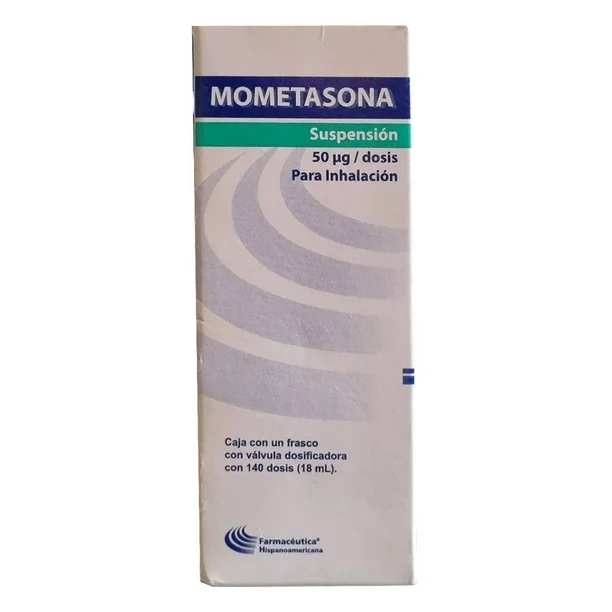
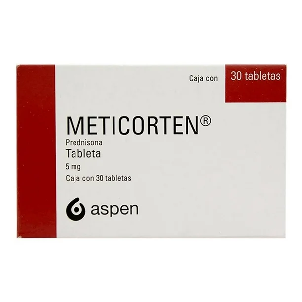
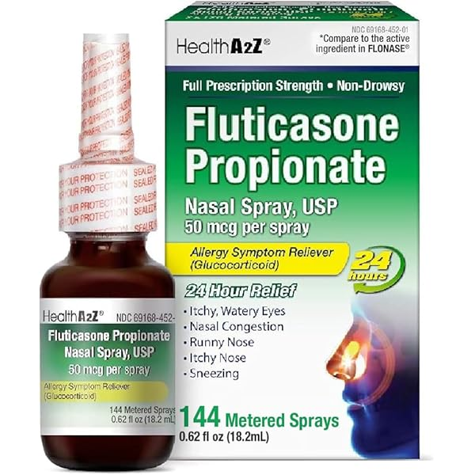
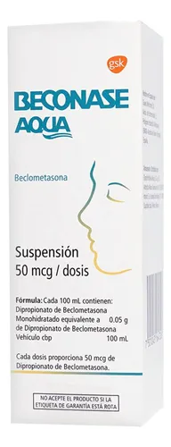
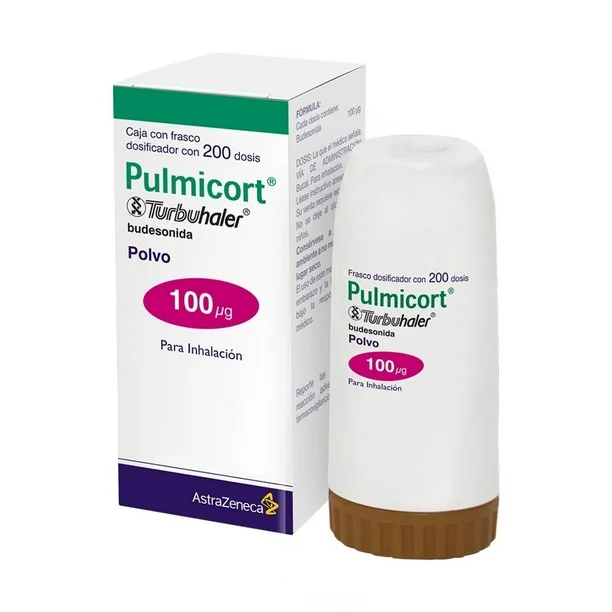

Se unen a receptores glucocorticoides intracelulares, formando un complejo que:
Esto conlleva a una potente acción antiinflamatoria, inmunosupresora y antialérgica.
Infecciones sistémicas activas (especialmente fúngicas).
| Fármaco | Dosis común inicial | Frecuencia | Vía |
|---|---|---|---|
| Budesonida | 200-400 mcg/día | 1-2 veces/día | Inhalada o nasal |
| Beclometasona | 200-400 mcg/día | 2 veces/día | Inhalada |
| Fluticasona | 100-500 mcg/día | 1-2 veces/día | Inhalada o nasal |
| Mometasona | 50 mcg/puff | 1-2 veces/día | Nasal o tópica |
| Ciclesonida | 80-320 mcg/día | 1 vez/día | Inhalada |
| Prednisona | 5-60 mg/día | 1 vez/día (oral) | Oral |
| Fármaco | Presentación 1 | Presentación 2 |
|---|---|---|
| Budesonida | Pulmicort® turbuhaler 200 mcg | Entocort EC® cápsulas 3 mg |
| Beclometasona | Beconase AQ® spray nasal 50 mcg | Qvar® inhalador 100 mcg |
| Fluticasona | Flonase® spray nasal 50 mcg | Flixotide® inhalador 125 mcg |
| Mometasona | Nasonex® spray nasal 50 mcg | Elocon® crema tópica 0.1% |
| Ciclesonida | Alvesco® inhalador 80/160 mcg | – |
| Prednisona | Meticorten® tabletas 5-50 mg | Dacortin® tabletas 5 mg |